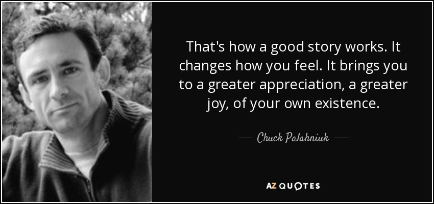

5 bài học "đắt giá" từ Nhà giả kim (The Alchemist)

“Khi bạn muốn một thứ gì đó, cả vũ trụ sẽ hợp lực giúp bạn đạt được điều đó.”
Câu nói trên có thể đã quá quen thuộc với không ít người đã học chưa từng đọc qua cuốn “Nhà giả kim” - “Cuốn sách chỉ bán chạy sau kinh thánh”. Mặc dù khi đọc qua nó, sẽ có nhiều luồng ý kiến khác nhau: có người sẽ khen tắm tắc, có người lại đánh giá đây là 1 quyển sách với những thông điệp hiển nhiên, cường điệu hóa. Nhưng đối với mình, đây là một quyển sách nên đọc một lần trong đời, bởi dù những triết lí mà nó truyền tải là không có gì là quá cầu kì, cao siêu, mà lại rất thực tế, đơn giản nhưng để thấu hiểu mà áp dụng hết tất cả thì không phải là dễ dàng. Và dưới đây là 5 bài học mà mình thấy hay, có thể được dùng như kim chỉ nam cho chúng ta định vị được hướng đi, cách sống trong cuộc đời này.
1. Ước mơ
Vâng, có lẽ sau khi đọc qua “Nhà giả kim”, không chỉ riêng mình mà nhiều người sẽ cảm thấy như được tiếp thêm một nguồn năng lượng vô hình vô cùng to lớn nào đó, rồi từ đó trong đầu là biết bao ước mơ, hồi bão cứ tuôn ra như bao lâu nay bị kìm nén. Dễ hiểu thôi, vì đây là thông điệp xuyên suốt của nó.
Nhưng liệu ý nghĩa thực sự của thông điệp về ước mơ mà tác phẩm gửi gắm là gì ?
Theo mình, ước mơ hiểu đúng là cách ta nuôi dưỡng nó từng ngày và dám thay đổi, dám hành đồng để đạt được ước mơ. Chứ không phải là cách mà khi ta đọc xong quyể n sách và bắt đầu mơ mộng. Ước mơ dù là nhỏ nhất thì cũng là ước mơ. Quan trọng là bạn dám đánh đổi vì nó. Trong truyện, Santigo có giắc mơ là sẽ được khám phá thế giới, nên cậu mua bầy cừu để chăn. Gỉa sử như cậu cứ sống như vậy, thì tới một lúc nào đó cậu cũng sẽ có được điều mình mong muốn. Nhưng không, cuộc sống này phải là không ngừng mơ ước, là không ngừng đặt ra những mục tiêu, những giới hạn mới để phấn đấu. Không nên tự thỏa mãn với những gì đã đạt được vì vô tình nó sẽ tạo ra những ranh giới giam cần ta, khiến ta bị bó hẹp vào nhận thức rằng đầy đã là giới hạn của mình. Ta nên dám từ bỏ cái cảm giác an toàn của bản thân để tìm kiếm những thứ mà con tim mách bảo. Thế nên, Santigo, sau khi gặp vị vua bi ẩn xứ Salem, đã bán bày cừu để sang châu Phi - nơi mà cậu chưa nghe tới bao giờ để bắt đầu thực hiện ước mơ của mình và cuối cùng thì cậu cũng tìm được cái mình cần. Thế nên cứ theo đuổi giắc mơ đi và thành công sẽ tìm đến bạn.
2. Bắt đầu bằng hành động
Trong câu chuyện, chàng trai người Anh đã dành 10 năm để đọc sách về luyện kim đan nhưng chưa bao giờ thử làm cái gì cả và khi được gặp nhà giả kim anh nhận được lời khuyên “Hãy thử đi”.
Có thể thấy anh ấy là một người có ước mơ thực sự và dám theo đuổi nó - 10 năm chỉ để đọc sách về luyện kim. Vậy tại sao anh ấy vẫn không thành công ? Đó là bởi anh ấy lựa chọn hướng đi không đúng cách. Trong cuộc sống, dù bạn có đam mê, có ước mơ và dám hi sinh tất cả để đạt được nó thì vẫn không có gì đảm bảo rằng bạn sẽ thành công vì bạn còn cần phải có cách tiếp cận phù hợp nữa. Chữa bệnh cũng cần phải phác đồ điều trị chứ không phải cứ uống thuốc là khỏi. Và cách tiếp cận của anh chàng người Anh giống như việc tập lái xe mà cứ để người khác chở vậy. Theo mình, sách suy cho cùng cũng là kiến thức của người khác, chỉ có thực hành mới tạo ra kiến thức cho riêng bản thân. Nên khi làm một cái gì đó, hãy bắt đầu bằng hành đồng. Hãy chỉ nên xem sách vở hay các kiến thức lí thuyết là chất xúc tác giúp ta đi nhanh hơn và đi đúng hướng. Còn việc ta đi như thế nào thì nên hiện thực nó qua hành động của chúng ta. Bởi chỉ có tự tay mình làm mình mới có thể chui rèn kĩ năng bản thân và có khi ta lại phát hiện ra những cái mà có thể không có trong sách vở.
3. Không sợ thất bại
Thất bại là một điều tất yếu trong cuộc sống. Nó với sự thành công dường như là hai nửa của một thái cực đồ, tưởng đối lặp mà lại là bổ trợ cho nhau tạo nên sự trọn vẹn cho cuộc sống này.Sau nhiều lần gian khổ, thậm chí cận kề cái chết, Santiago đã thấu hiểu về kho báu thực sự là gì. Vì vậy ta nên xem thất bại như một điều kiện đủ cho công thức thành công. Khi đã trải qua quá nhiều thất bại, con người sẽ dần trưởng thành, kinh nghiệm hơn để tránh đi các thất bại tương tự và cuối cùng sẽ đạt được thành công. Các ban nên nhớ là Jack Ma đã từng trượt đại học 2 lận, 10 lần bị Harvard từ chối, 30 lần xin việc thất bại để có được thành công như hiện tại. Hay Flappy Bird trước khi trở thành cơn sốt toàn cầu thì trước đó hoàn toàn vô danh trong suốt nửa năm phát hành. Vì thế “đừng sợ thất bại,mà hãy sợ việc giậm chân tại chỗ”.
4. Sống với hiện tại
“Nghĩa là khi ăn tôi không làm gì khác hơn là ăn. Khi chạy tôi không làm gì khác ngoài chạy. Rồi nếu có phải đánh nhau thì cái ngày tôi chết cũng đẹp như mọi ngày khác. Tôi không sống trong quá khứ hay tương lai. Tôi chỉ có hiện tại và quan tâm tới hiện tại. Nếu ta lúc nào cũng ở trong hiện tại được thì ta là người hạnh phúc.”
Mỗi người chỉ có một lần được sống, tại đây ngay giây phút này. Cho nên bạn hãy trân trọng những điều đơn giản nhất trong cuộc sống. Có những người lại không nhận ra được điều đó. Họ dành hầu như cuộc sống để theo đuổi tiền bạc, địa vị những cái mà theo họ đảm bảo cho họ cuộc sống tốt đẹp hơn. Nhưng khi đi cuối con đường, họ mới nhận ra, hạnh phúc đơn giản là chỉ là có một ai đó chờ cơm, đợi cửa sau một ngày làm việc mệt nhọc, là nụ cười khi đã bỏ ra không ít giọt nước mắt, mồ hôi vì cái mình ước mơ. Cuộc sống này là của bạn, bạn buồn hay vui, sướng hay khổ là do chính bạn lựa chọn. Những điều tưởng chừng như đơn giản đó nhưng nó chính là cuộc sống của bạn, hãy trân trọng, tận hưởng nó.
5. Cái gì cũng nên cần có một câu chuyện.

Đây là bài học mình không đúc kết qua nội dung của sách, mà từ những gì dạo gần đây mình được học và khi tự nhìn lại cách mình đến với Nhà gỉa kim cũng có nhiều điểm tương đồng. Điều đầu tiên mà khiến mình đọc quyển sách này là bởi câu chuyện đi kèm của nó. Bởi mình tự nhận là không có hứng thú lắm với những quyển sách nặng quá về triết lí diễn giải. Riêng đối với Nhà giả kim, nó lại dùng một câu chuyện (phiêu lưu - nguyên nhân chính đọc sách) để qua đó lồng ghép các thông điệp. Qua đó giúp ta đọc không bị quá nhàm chán, mà trái lại ta lại bị hút vào nó và từ đó những thông điệp là tự nhận thức mỗi người đúc kết ra.Vì vậy, một câu chuyện đi kèm là điều thực sự cần thiết để đầu tiên là thu hút người khác. Lấy ví dụ, bạn là một startup tham gia chương trình Shark Tank để gọi vốn. Có thể bạn trình bày về ứng dụng, ý tưởng của mình là cực kì đầy đủ, nổi trội, nhưng có thể bạn sẽ không được đầu tư vì có thể ngoài kia có cơ số là các sản phẩm tương tự như vậy rồi. Nhưng nếu bạn tạo cho mình một câu chuyện đi kèm có thể các nhà đầu tư sẽ đầu tư cho bạn vì có thể họ thích câu chuyện của đó. Và chính câu chuyện đó chính là thứ “đánh id” cho bạn, làm bạn khác biệt với phần còn lại. Đôi khi sự thành công đơn giản từ việc bạn làm những cái khác biệt.
Kết
Trên là 5 bài học (có thể là 4) mình thấy hay và hữu ích nhất cho cuộc sống chúng ta. Có thể mỗi người sẽ có cho mình những bài học khác nhau nhưng suy cho cùng vẫn là cách ta hiểu và áp dụng nó vào cuộc sống như thế nào.